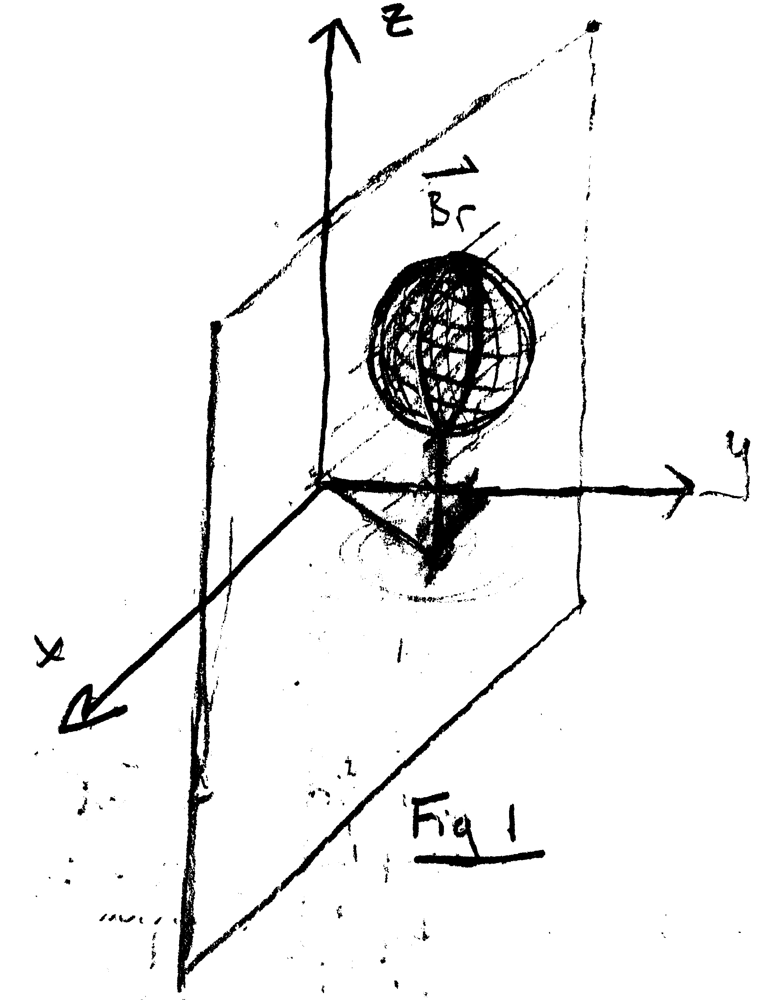
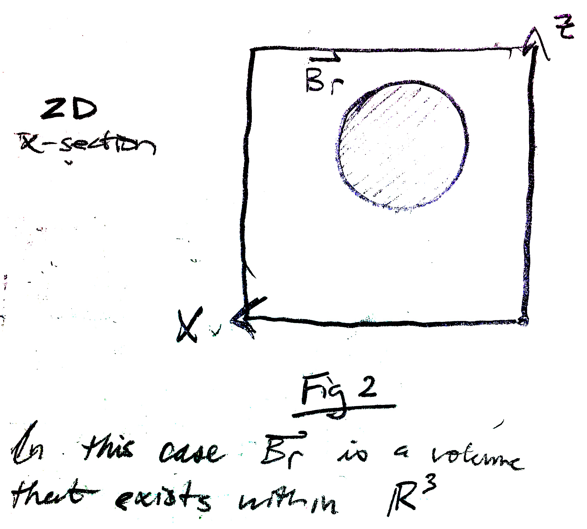

Needs Latex equations, code, figs
In physics, conservation laws state that no energy can be created or destroyed
but simply changed into one form or another, converted yet conserved. A Russian
mathematician from the 19th century named Aleksandr Lyapunov applied this
fundamental principle to develop a major pillar of nonlinear control theory.
The philosophy is that when observing the total energy of a system continually
dissipating it will settle to an equilibrium if the system is lower bounded.
Imagine a pendulum swinging back and forth with some small friction around the
hinge. Intuitively, we know the friction will reduce the kinetic and potential
energy until they both settle to a resting value, and the pendulum will sit at
the bottom of its arc. In this case, the pendulum system is lower bounded by the
lowest total energy it can physically obtain due to gravity.
Lyapunov formalized this intuitive physical understanding into Lyapunov’s Direct
Method, which contains two major concepts in Lyapnouv Stability and Lyapunov
Functions.
Lyapunov Functions are essentially scalar energy functions taking the form V(x)
where it is positive definite and its derivative is negative semi-definite. They
are often derived from the physical attributes of the system and serve only as a
“candidate” until proven sufficient. More on that to come. Example of nonlinear
MSD candidate Lyapunov function.
Lyapunov Stability is present if the Lyapunov Function V(x) satisfies the
criteria:
While this mathematical jargon is a confusing, it is not actually the most
general solution. Lyapunov’s original work is a narrow approach and some
extension is required for more thorough generality. Using invariant set theorems
we can best frame the object of Lyapunov’s work and then use the two
interchangeably.


BR is supposed to represent an arbitrarily large dimensional
volume that exists within a space of the same or greater dimension . Multiple
and geometrically different volumes can exist within space of . If the union of
these volumes comprehensively coverages all of , then is described as “global”.
Otherwise, it and the other volumes are described as “local”.
Now imagine a point moving within our volume . If for all possible trajectories
of that point for all of time t, it stays within that volume. Additionally,
let’s imagine that the velocity of the point is slowing down for all of time t.
Intuition would tell us that it will eventually (asymptotically) come to rest at
some location within . This is essentially the notion of stability, as
formalized by Lyapunov, framed from the perspective of invariant sets.
V(x) actually represents the “energy” of the system in question. When this
system’s energy is lower-bounded, meaning it has some volume that contains it,
we can consider the rate of change of energy. If this rate of change of energy, Vdot(x)
is strictly negative for all time t then the will clearly approach its
lower-bound. In the case where Vdot(x)=0, the system will enter a limit cycle as
described in a previous post.
Analytically, the power of this extension of Lyapunov’s formalism for stability
is evident. In order to find the stability of a system, candidate Lyapunov
functions can be proposed until they fit the stability criteria previously
described. Of course there is a drawback to the method, which is the fact that
it is a sufficiency theorem. Stability can only be proved by a candidate
upholding the stability criteria, while failure to do so is inconclusive.
© 2016 Wiley Jones